1. Тема, мета та постановка задачі ЛР №7
Тема: ПОТОКИ.
Мета: придбати практичні навички роботи з потоками.
Постановка задачі: В окремому проекті виконати завдання до пункту №3
2. UML-діаграма класів
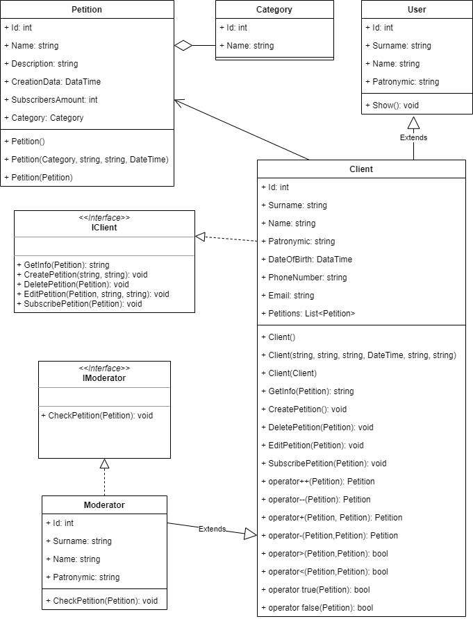3. Кодування ПЗ
3.1. Файлова структура проекту
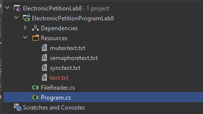3.2 Програмний код
Структура класу FileReader
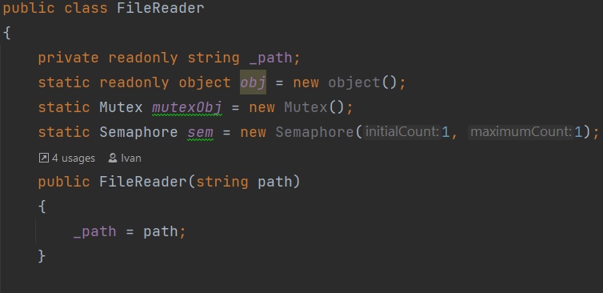Завдання 4.1
Код програми
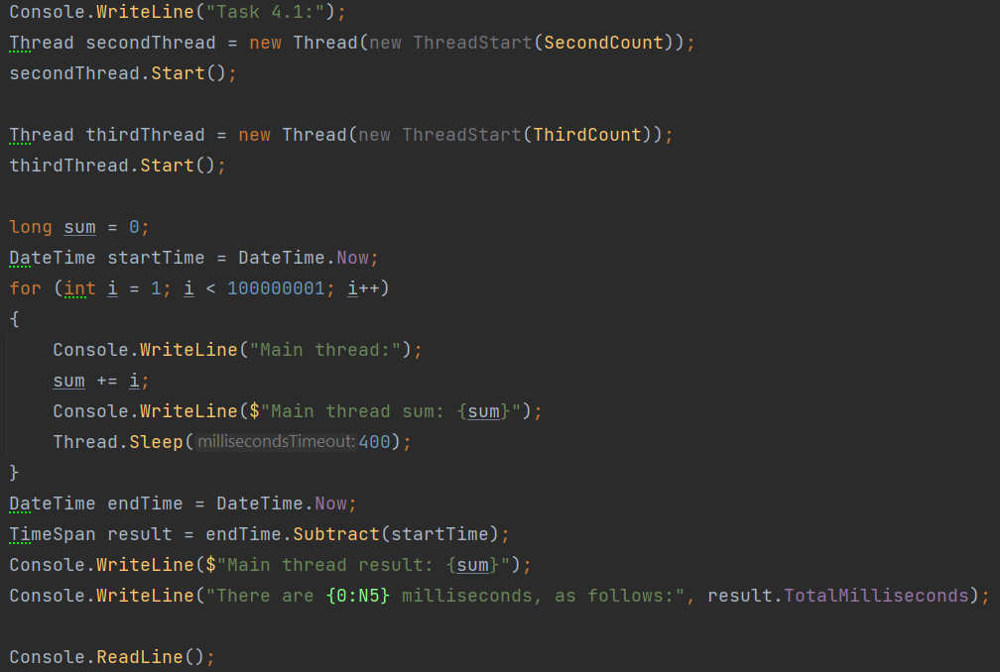Метод класу FileReader
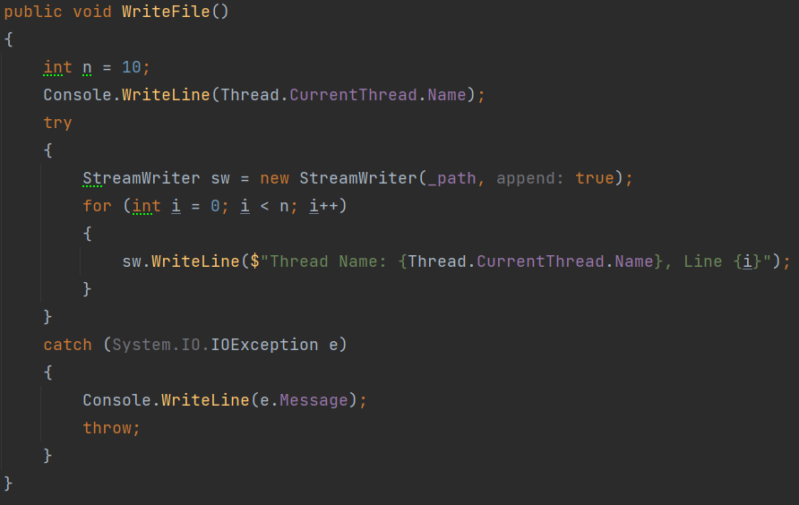Завдання 4.2
Код програми
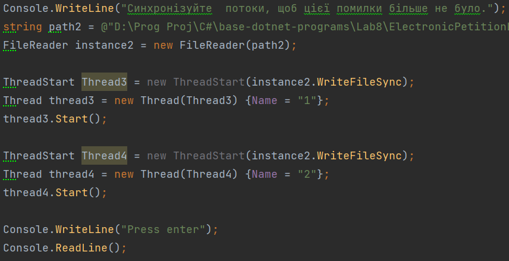Метод класу FileReader
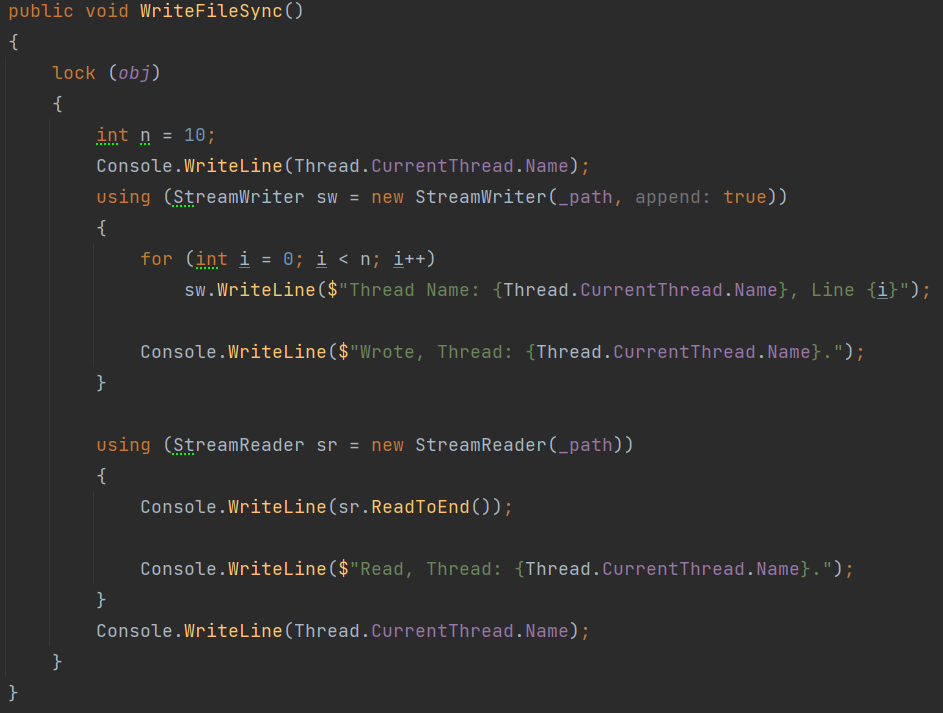Завдання 4.3
Код програми
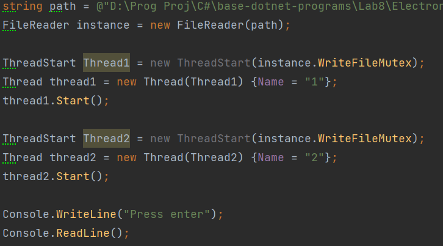Метод класу FileReader
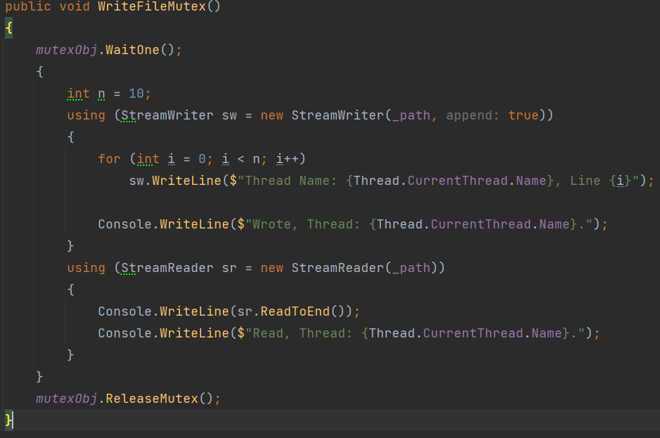Завдання 4.4
Код програми
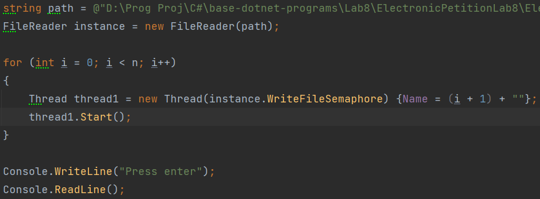Метод класу FileReader
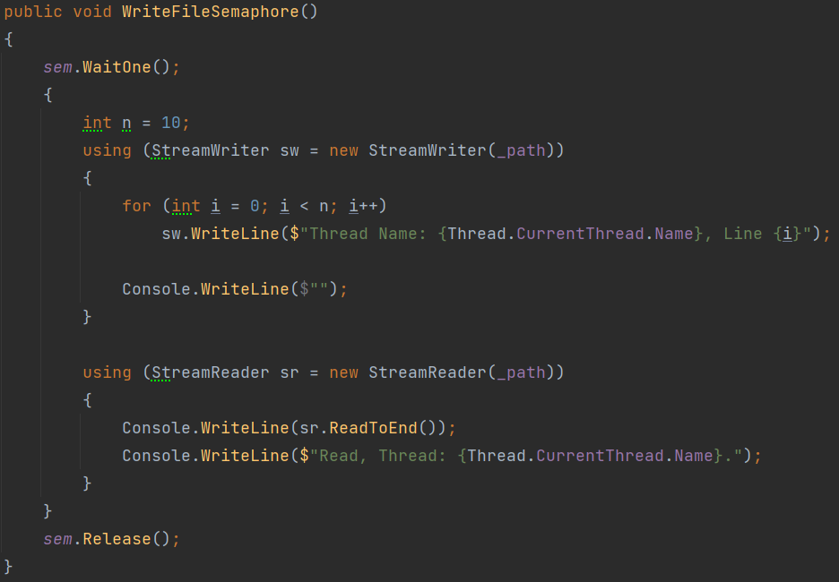4.1 Посилання на папку з проектом
Посилання на гугл-диск4.2 Exe-file
.exe5 Висновок
При виконанні лабораторної роботи ми придбали практичні навички роботи з виключними ситуаціями, які виникають при роботі програми.